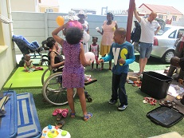
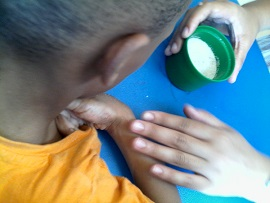
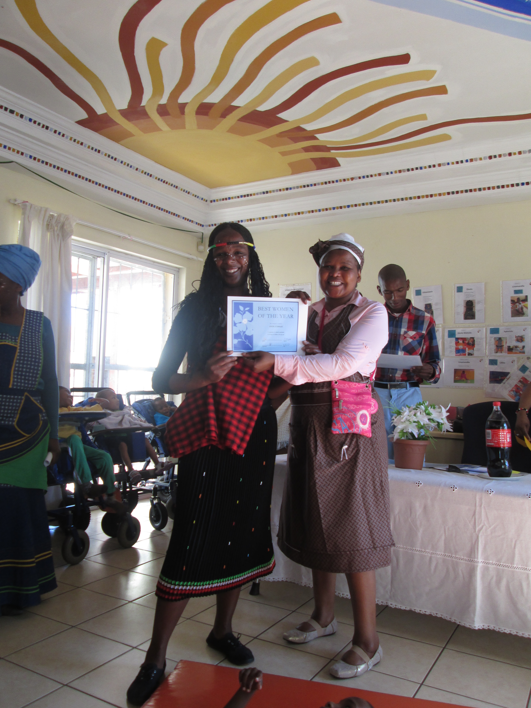
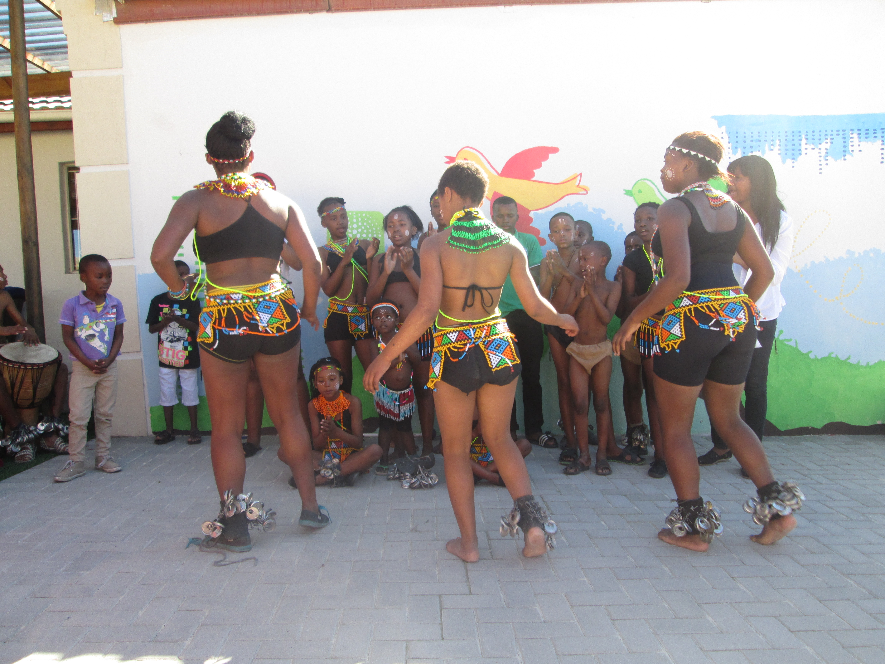

Sibongile News
2017 Here We Come
posted on 17 Jan 2017
Happy New Year from all of us at Sibongile
2017 lets do this once again
lets do this for the kids
lets do this for the family
#Proud To Be Part Of Sibongile
#Mission statement continues
#The Dream Continues
# 2017 We Are Here
YOU WANT TO HELP?
BUT YOU DO NOT KNOW HOW
CALL US TODAY…
EMAIL US TODAY…
VISIT US TODAY…
Be Part of Our Christmass…...!!!!
posted on 04 Nov 2016

Word of appreciation goes to all the donors who contributed in the success of all the previous Christmas festivals
However this year too was a good long year indeed.
From staff to management, they have done a tremendous job in caring for children whom are under the care of Sibongile.
Once again we call out, humbling ourselves to you
When making a shopping list for Christmas this season,
Please keep us in mind.
Making a Christmas donation to us will show our children that you are thinking of them during the holiday season, show them that you are mindful of their needs and respectful of their interests.
This is a truly thoughtful opportunity to spread a message of cheer and charitable giving during the Christmas season.
Family of Sibongile appreciate all kinds of expressions of generosity.
To make a Donation
Account Holder
Sibongile Day and Night Care Centre
Bank
First National Bank
Account Number
622 566 319 22
Branch
Promenade
Branch Code
250 555
Please kindly forward a proof of payment with details on where to send the gift acknowledgement.
Gift can be made in any amount.
Donation must be reference with the donors name or company representing.
Once the donation has been done we will provide a donor with a lovely certificate showcasing the donation amount and their details, (as a recipient).
The gift acknowledgement certificate can be sent to the donor for gift giving.
It is the donor’s choice to either attend our children’s Christmas party invitation through donations received.
However the invitations for the Christmas Party will be sent according to to the proof of payments received via email
All funds raised through the Christmas donation over the November month, will go directly to support our Children’s
Christmas Festival in our fight for acceptance and integration in our community regarding disability.
Support us, to support them,
”They are person before their Disabilities”
**Eyethu Ningiza**
How to Register your child
posted on 01 Apr 2016
Would you like to register your child at Sibongile?
First and foremost allow me to announce that Sibongile Day and Night Care Centre is in its full capacity and can no longer enroll more children both to our Day Care Centre and Residential Houses.
However we hold a waiting list which allows us to place children who are considering placement in our premises.
Well this is what you have to do…
Step 1 Visit
Visit our main offices at the Corner of Nonkxwe and Nkanyezi Street in Ilitha Park behind the ZCC church with the following copies
Birth certificate
Clinic card
Appointment card
Medical report (History of disability)
ID Copy (parent)
Step 2 Waiting period
During this time, both parent(s) and the school are waiting for space availability in order to commence with the admission process.
The waiting list does not specifically state how long it will take for the space to be available, however due to our lengthy waiting list it takes some time for the space to be available.
Please also note that; it takes some time for our children to graduate from our Day Care Centre to a Special School hence the admission process takes a while.
Step 3 Call for assessment
During the waiting period you will receive a call from Sibongile Office notifying you about the date of the assessment.
The call from Sibongile Office will request you to bring the child to our Day Care Centre premise.
You will leave the child under the care of our teachers and physiotherapist from 09h30 – 15h00 (5 hours and 30 minutes).
Your child will be assessed and evaluated by the above mentioned day care staff to see if we will be able to accommodate the child at Sibongile.
When you come back to collect the child you will be told if whether he / she qualifies or not.
Assessment DOES NOT mean that there is space available, but it only prepares the candidate’s in-case we have a space available.
Step 4 Admission
When the above steps have been completed and the space is available candidates will be called according to the dates of applications.
(This basically means that, FIRST COME-FIRST SERVED). Forms will be given to successful candidates to be completed and sent back to school.
Candidates will be told when to start at school.
Possible questions you might be asked
Current place of residence
Two contact details
Child disability
Hospital attending
Previous placement
In what way did you know about Sibongile? E.g. Internet, Doctor referral, Radio, Someone from Sibongile(Who)
*Published by Eyethu Ningiza*
What to donate this season
posted on 31 Mar 2016

Life at our Day Care Center
Left insert Sensory development are some of the little things that families can do with their kids. Remember most of children with disabilities are not exposed to the outside world. So if we are able to take the outside world to them, WHY NOT, this provides our children an opportunity to see and feel the things that they usually see from a distance
Day care Center is reaching out to over 20 families in the community of Khayelitsha. We are able to support them to care for their children with disabilities at home by giving them access to the day care facility for their child as well as running parent support group and disability awareness/training workshops while we provide their children with basic education and or therapy programs on a weekly basis.
Children under our care are often vulnerable and at risk because of the nature of their disabilities and complex health, medical needs and there are very few Centers in our community that can meet the needs of these children. We receive phone calls and requests daily from social workers, child welfare and the hospitals asking if we have space for a particular child. This is why the work of Sibongile is so important for our community.
Currently we are full to capacity and therefore cannot take any more children in to Sibongile Day Care Center. It is important to us to focus on the internal structures and quality improvement of the Center, what we also see as important.
Wondering what you can donate with?
Winter is already sidling and creeping in. With that being said we wish for it to arrive when we are covered.
Here is what we wish for, for all our 4 premises
5 Electrical heaters (one each house)
Warm single beds blankets
A step-ladder, You know how it’s like, globes fuses all the time, very frustrating when you can’t find anything to step onto when you want to replace the globes. Ohh it will be very much helpful to our caretaker as-well.
Our Day Care Center could do with the following items
Preschool Chairs and tables
Shelving for our books
Computer desk for our office
Help our Part-time Caretaker outdo cleaning and maintaining our 4 beautiful yards by providing him with the following:
Rake
Spade
Folk-Spade
Grass Machine cutter
*Published By Eyethu Ningiza*
March 2016
posted on 23 Mar 2016
Apologies for the long absence but Sibongile is now back on track with all the updates from the last part of 2015 going into 2016. We hope you will continue to journey with us as we report on the changes and growth at Sibongile and more. Click here to view the first edition of our quarterly newsletter.
To receive our quarterly newsletters, simple sign-up on our website or simple send a blank email to the attention of .(JavaScript must be enabled to view this email address) and the next edition will be personally dropped on your email and more ......enjoy…..
First_Addition_2016
Life at Sibongile - Nomasango Xabanisa - The Director
posted on 08 Jul 2015
Anytime that you think you have hit the top of the mountain, the truth of the matter is you have just reached another mountain, and it’s there to climb over again. At every new level you will meet a new challenges.
Foundation:
When I built Sibongile for my children I made sure the foundation was God.
In my deepest moments, what has really got me through is prayer. Sometimes my prayers were “Help me God’’ and sometimes “thank you, God’’.
I have discovered that intimate connection and communication with the creator will always get me through because I know my support, my help; it is just a prayer away.
As Maya Angelou says” When you get, give. When you learn, teach. These are the life lessons I live by at Sibongile.
Ever since I started looking after children with disabilities, it has been a humbling experience. I have come across speed bumps along the way but as Robert Kiyosaki states” If you are the kind of person who is waiting for the ‘‘Right time’’ for things to happen, you might wait for a long time. It’s like waiting for all the traffic lights to be green for five miles before starting a trip.
“God has been my driving force and through it all I have come out stronger, that’s why I have decided to hold the bull by its horns and organise very interesting events at Sibongile.
There are a lot of new and interesting events coming up so be on the lookout.
These past few months made me remember why I started the organisation.
I wanted to give love to children, children with special needs and whom are under my care, and make a difference. God has been my support structure and he keeps on enabling me to spread the love as wide as I can.
I want to thank everyone who keeps on supporting Sibongile, May God continue blessing you abundantly.
What to Look out for:
Special programs for children with disabilities taking place through parental meeting between Sibongile Day and Night Care Centre and the Community at large
Nelson Mandela Day, the Organisation will be accommodating visitors from different places, in groups, and or individually to come to the centre and spend some time with our children, more specifically to emphasize acceptance and maintaining the love that Sibongile Day and Night Care Centre has for our Children.
Women’s Day hosted to motivate all the mama’s together with other staff that are hands on with our children on a daily basis throughout these children’s lives
Sibongile’s Beauty pageant - Mr and Miss Tiny Tots - will be used as a form of integration between children with disabilities and children with non disability, and to to eliminate the stigma that disability seems to carry in our community.
Annual General Meeting - To report back to our sponsors and community at large
“For I know the plans I have for you” Declares the lord.
Sibongile’s overview throughout the year
posted on 06 Nov 2014
http://sibongile.org/downloads/en/March_2014.pdf
Happy New Year, welcome 2014
posted on 24 Jan 2014
The organization would like to take this opportunity to thank you for your generous support and precious love you have for our children. The difference you are making is drawing a picture in the eyes of God, in the faces of our children and in the stability of the organization. Be blessed now and forever. We value your love, prayers and the relationship we have with you.
Also, on behalf of the Sibongile organization, I would like to take this opportunity to apologize for any inconvenience and delays regarding the previous updates. It has been quite a difficult time due to the changes we have encountered. We are assuring you that this will not be happening again
Sango on woman’s day
posted on 23 Aug 2013

Traditional woman
posted on 23 Aug 2013
